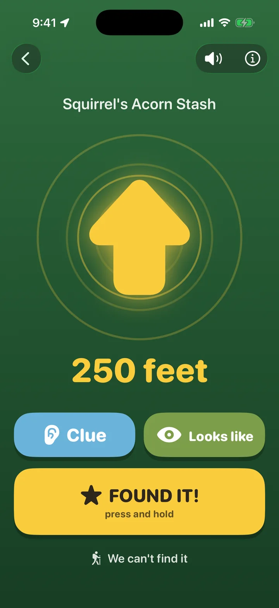

Geocaching,
kid-sized.
Built for the child, with a grown-up right beside them.
The kid holds the phone. It pings faster as they get closer, buzzes when they point it the right way, counts the feet down, and reads the clue out loud in words they know. When GPS runs out of precision, it says so and shows them where to look. When they find the box, they take the picture and earn a sticker on their adventure map.
Coming to the App Store
See a hunt
iPhone, iOS 18 and later. $3.99, no ads, no accounts, nothing collected.
